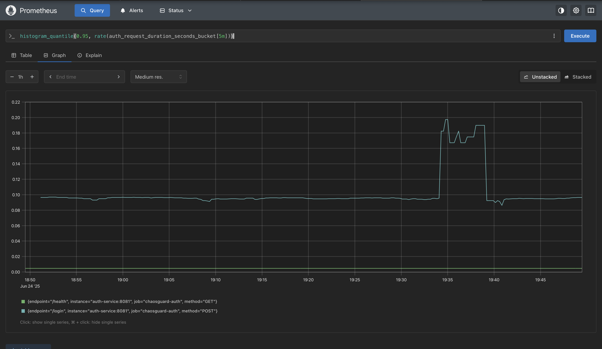
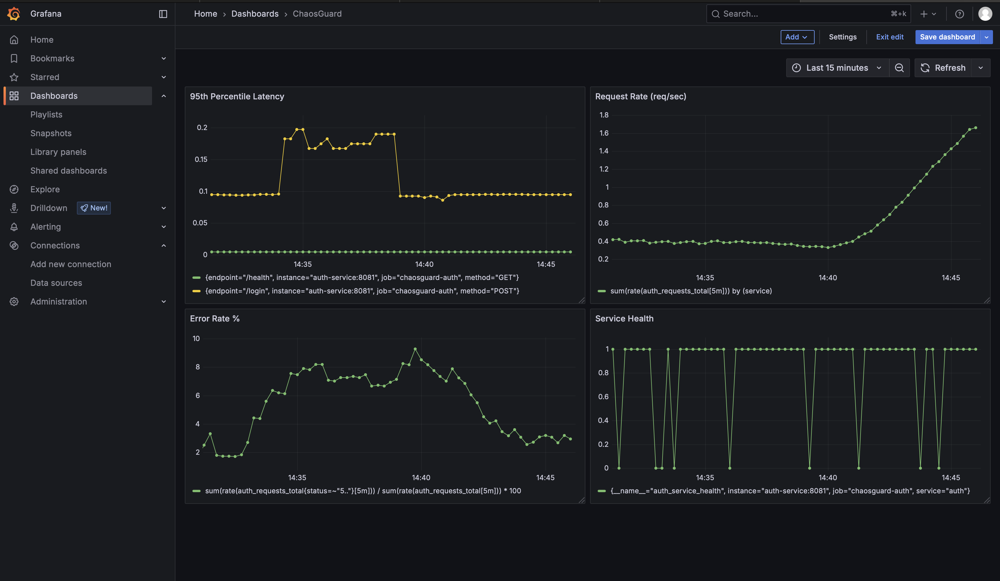

ChaosGuard 🛡️⚡


A comprehensive chaos engineering platform for testing microservices resilience with automated incident response and reporting.
ChaosGuard provides a complete, production-ready chaos engineering ecosystem that helps you build more resilient distributed systems by intentionally introducing controlled failures and measuring their impact.
✨ Features
- 🏗️ Complete Microservices Architecture - Auth, Product, and Payment services built with Go
- ⚡ Advanced Chaos Engineering - Pod failures, network latency injection, CPU stress testing
- 📊 Comprehensive Monitoring - Prometheus metrics collection with Grafana dashboards
- 🤖 Automated Reporting - AI-generated RCA reports with actionable insights
- 🔄 CI/CD Integration - GitHub Actions workflows for automated chaos testing
- 🛡️ SLO Monitoring - Real-time SLO compliance tracking and alerting
- 📈 Load Testing - Integrated k6 performance testing with chaos scenarios
- 🐳 Container-Ready - Full Docker and Kubernetes deployment
- 🌐 Production-Grade - Proper resource management, security, and scalability
🏗️ Architecture
graph TB
subgraph "External Traffic"
LT[Load Testing]
U[Users]
end
subgraph "Kubernetes Cluster"
subgraph "Application Layer"
GW[API Gateway<br/>Nginx]
AS[Auth Service<br/>Go + Prometheus]
PS[Product Service<br/>Go + Prometheus]
PY[Payment Service<br/>Go + Prometheus]
end
subgraph "Monitoring Layer"
PR[Prometheus<br/>Metrics Collection]
GR[Grafana<br/>Dashboards]
end
subgraph "Chaos Engineering"
LC[LitmusChaos<br/>Experiment Engine]
CE[Chaos Experiments<br/>Pod/Network/CPU]
end
end
subgraph "Automation"
GA[GitHub Actions<br/>CI/CD Pipeline]
RC[RCA Generator<br/>Python Reports]
end
U --> GW
LT --> GW
GW --> AS
GW --> PS
GW --> PY
AS --> PR
PS --> PR
PY --> PR
PR --> GR
LC --> CE
CE -.-> AS
CE -.-> PS
CE -.-> PY
GA --> LC
GA --> RC
RC --> GA
style AS fill:#e1f5fe
style PS fill:#e1f5fe
style PY fill:#e1f5fe
style LC fill:#ffebee
style CE fill:#ffebee🚀 Quick Start
Prerequisites
| Tool | Version | Purpose |
|---|---|---|
| Docker | 20.10+ | Container runtime |
| Minikube | 1.32+ | Local Kubernetes |
| kubectl | 1.28+ | Kubernetes CLI |
| Go | 1.21+ | Service development |
| k6 | Latest | Load testing |
System Requirements: - CPU: 4+ cores - RAM: 8+ GB - Disk: 20+ GB free space
Installation
# 1. Clone the repository
git clone https://github.com/your-username/chaosguard.git
cd chaosguard
# 2. Setup environment and build
make setup
# 3. Deploy to Kubernetes
make deploy
# 4. Verify installation
make statusAccess the Platform
After deployment, access your ChaosGuard platform:
- API Gateway:
http://$(minikube ip):30080 - Grafana Dashboard:
http://$(minikube ip):30300(admin/admin123) - Prometheus Metrics:
http://$(minikube ip):30090
📊 Monitoring & Observability
Service Level Objectives (SLOs)
ChaosGuard monitors these critical SLOs:
| Metric | SLO Target | Alert Threshold | Business Impact |
|---|---|---|---|
| Error Rate | < 1% | > 0.5% | Customer experience |
| P95 Latency | < 1000ms | > 800ms | User satisfaction |
| Availability | > 99.9% | < 99.5% | Revenue protection |
Key Metrics
- Request Rate: Requests per second across all services
- Error Rate: 5xx error rate by service and endpoint
- Latency Percentiles: P50, P95, P99 response times
- Resource Usage: CPU, memory, network I/O per service
- Service Health: Real-time health check status
Dashboards
Access pre-configured Grafana dashboards:
- 🎯 SLO Dashboard - Real-time SLO compliance monitoring
- ⚡ Chaos Impact - Experiment impact analysis
- 📈 Service Metrics - Detailed performance analytics
- 🔍 System Overview - High-level platform health
Prometheus Dashboard

Grafana Dashboard

⚡ Chaos Engineering
Supported Experiments
| Experiment | Description | Target | Duration | Impact |
|---|---|---|---|---|
| Pod Failure | Random pod termination | 30% of pods | 5 minutes | Tests auto-recovery |
| Network Latency | Inject 2s latency | Product service | 3 minutes | Tests timeout handling |
| CPU Stress | 100% CPU utilization | Payment service | 5 minutes | Tests resource limits |
Running Experiments
# Run individual experiments
make chaos-pod # Pod failure simulation
make chaos-network # Network latency injection
make chaos-cpu # CPU stress testing
# Run complete chaos suite
make chaos
# Custom experiment duration
./scripts/chaos-runner.sh pod-failure 300Automated Chaos Testing
ChaosGuard includes GitHub Actions workflows for: - Scheduled chaos testing (weekly) - Pre-deployment validation - Automated incident reporting - SLO breach notifications
🧪 Load Testing
Basic Load Testing
# Run standard load test
make test
# Custom load test
k6 run tests/load-test.js --duration 10m --vus 50Chaos-Aware Load Testing
# Run load test during chaos experiments
k6 run tests/load-test-chaos.jsTest Scenarios
- 👤 Normal User Journey (40%): Login → Browse → Purchase
- 🛒 Browse Only (30%): Product catalog browsing
- 🔐 Authentication Heavy (20%): Multiple login attempts
- ❤️ Health Checks (10%): Monitoring traffic
📋 Automated Reporting
ChaosGuard automatically generates comprehensive post-incident reports:
Report Contents
- 📊 Executive Summary: High-level incident overview
- ⏰ Timeline Analysis: Detailed event chronology
- 📈 Metrics Analysis: SLO breach detection and trends
- 🔍 Root Cause Analysis: AI-generated insights
- 🔧 Recommendations: Actionable improvement strategies
- 📋 Follow-up Actions: Tracked remediation tasks
Generate Reports
# Generate RCA report after experiments
python3 scripts/rca-generator.py
# View generated reports
ls reports/🛠️ Development
Project Structure
chaosguard/
├── 📁 services/ # Microservice implementations
│ ├── 🔐 auth-service/ # Authentication service
│ ├── 📦 product-service/ # Product catalog service
│ └── 💳 payment-service/ # Payment processing service
├── 📁 k8s/ # Kubernetes manifests
│ ├── 📊 monitoring/ # Prometheus & Grafana configs
│ └── 🔧 *.yaml # Service deployments
├── 📁 chaos/ # Chaos experiment definitions
├── 📁 scripts/ # Automation scripts
├── 📁 tests/ # Load testing scenarios
├── 📁 monitoring/ # Dashboard configurations
└── 📁 reports/ # Generated RCA reportsAdding New Services
- Create service directory under
services/ - Implement Prometheus metrics in your service
- Add Kubernetes manifests in
k8s/ - Update monitoring configuration
- Include in chaos experiments
Custom Chaos Experiments
# Example: Custom memory stress experiment
apiVersion: litmuschaos.io/v1alpha1
kind: ChaosEngine
metadata:
name: memory-stress-chaos
namespace: chaosguard
spec:
appinfo:
appns: 'chaosguard'
applabel: 'app=your-service'
appkind: 'deployment'
chaosServiceAccount: litmus-admin
experiments:
- name: pod-memory-hog
spec:
components:
env:
- name: TOTAL_CHAOS_DURATION
value: '300'
- name: MEMORY_CONSUMPTION
value: '500'🔧 Configuration
Environment Variables
| Variable | Description | Default | Example |
|---|---|---|---|
CHAOS_DURATION |
Default experiment duration | 300s |
600s |
PROMETHEUS_URL |
Prometheus endpoint | http://localhost:30090 |
Custom URL |
GRAFANA_URL |
Grafana endpoint | http://localhost:30300 |
Custom URL |
SLO_ERROR_THRESHOLD |
Error rate SLO | 0.01 |
0.005 |
SLO_LATENCY_THRESHOLD |
Latency SLO (ms) | 1000 |
500 |
Customizing SLOs
Edit monitoring/alert-rules.yml:
groups:
- name: custom-slos
rules:
- alert: HighErrorRate
expr: rate(requests_total{status=~"5.."}[5m]) > 0.005 # 0.5%
for: 2m
labels:
severity: critical🔍 Troubleshooting
🐳 Docker Issues
# Rebuild images in minikube
eval $(minikube docker-env)
make build
# Check image availability
docker images | grep chaosguard
# Fix image pull errors
kubectl patch deployment auth-service -n chaosguard \
-p '{"spec":{"template":{"spec":{"containers":[{"name":"auth-service","imagePullPolicy":"Never"}]}}}}'🌐 Network Connectivity
# Use port forwarding instead of NodePort
kubectl port-forward svc/api-gateway 8080:80 -n chaosguard
kubectl port-forward svc/grafana 3000:3000 -n chaosguard
# Test internal connectivity
kubectl run test-pod --image=curlimages/curl -it --rm -n chaosguard -- sh
curl http://auth-service:8081/health📊 No Metrics in Prometheus
# Check Prometheus targets
curl http://localhost:9090/api/v1/targets
# Verify service metrics endpoints
curl http://localhost:8080/auth/metrics
# Check Prometheus configuration
kubectl get configmap prometheus-config -n chaosguard -o yaml⚡ Chaos Experiments Failing
# Check LitmusChaos installation
kubectl get pods -n litmus
# Verify RBAC permissions
kubectl get clusterrolebinding litmus-admin
# Check experiment logs
kubectl logs -l app=chaos-runner -n chaosguardHealth Check
# Run comprehensive health check
./tests/health-check.sh
# Expected output: All checks passing ✅📈 Performance Benchmarks
Load Test Results
| Scenario | RPS | P95 Latency | Error Rate | Resource Usage |
|---|---|---|---|---|
| Normal Load | 100 req/s | 45ms | 0.1% | CPU: 15%, RAM: 128MB |
| Stress Test | 500 req/s | 180ms | 0.8% | CPU: 60%, RAM: 256MB |
| Chaos + Load | 200 req/s | 950ms | 2.1% | CPU: 45%, RAM: 200MB |
Chaos Experiment Impact
| Experiment | Service Availability | Recovery Time | SLO Impact |
|---|---|---|---|
| Pod Failure | 99.2% | 15 seconds | ⚠️ Latency spike |
| Network Latency | 100% | N/A | ❌ SLO breach |
| CPU Stress | 99.8% | 30 seconds | ⚠️ Minor impact |
📄 License
This project is licensed under the MIT License - see the LICENSE file for details.
🙏 Acknowledgments
- LitmusChaos - Chaos engineering framework
- Prometheus - Monitoring and alerting
- Grafana - Analytics and visualization
- Kubernetes - Container orchestration
- k6 - Load testing platform